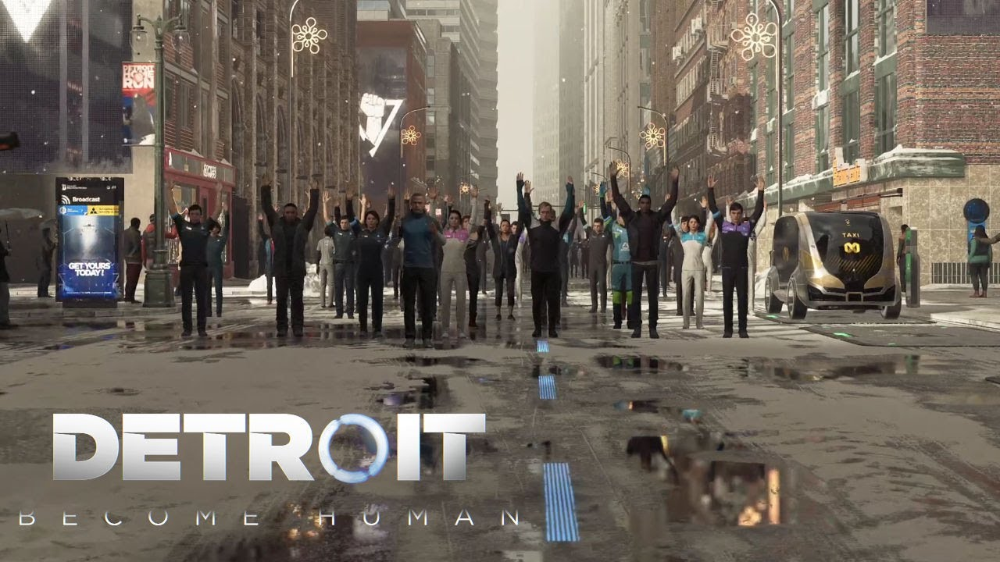
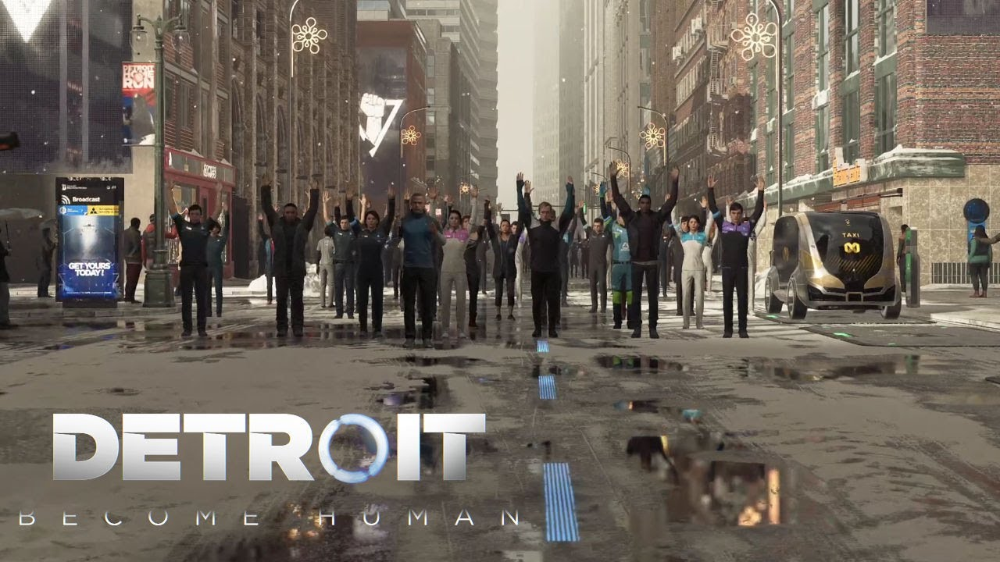
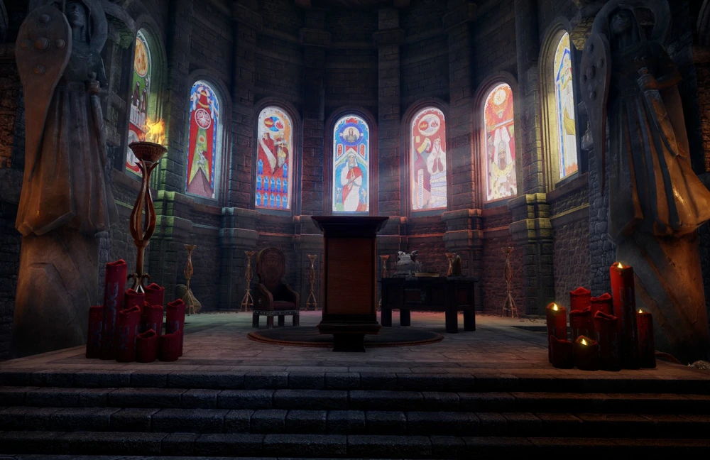
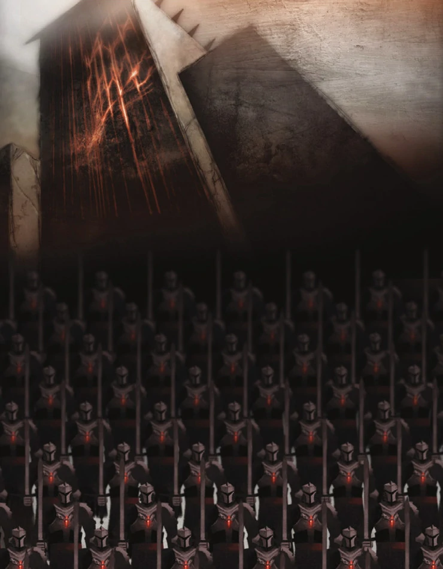
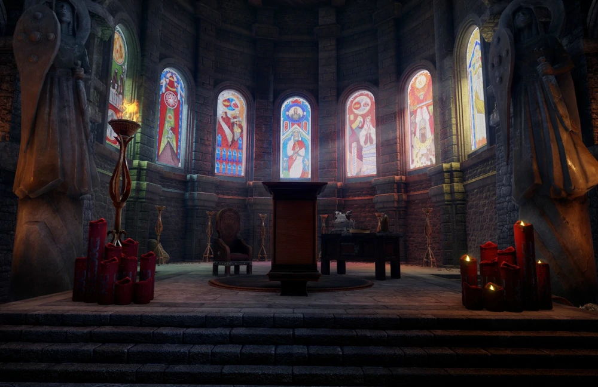
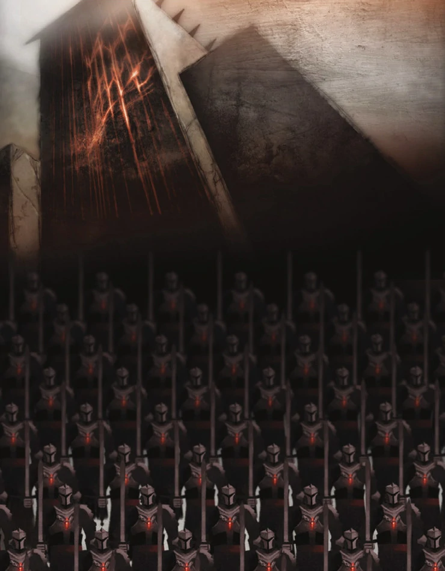

The Iliad - Homer
The Trojan War?
Fantastical epic that seems to be either an amalgamation of numerous smaller conflicts or a exaggeration a single conflict estimated to have occurred 500 years prior to being written down
{kind=link}

(click images to view larger versions and additional information)
Fantastical epic that seems to be either an amalgamation of numerous smaller conflicts or a exaggeration a single conflict estimated to have occurred 500 years prior to being written down

Fantasy video game series in which most of the world-building is based heavily on the history of Medieval and pre-medieval Europe, particularly in regard to international politics and the interactions between states and the church
 



George R R Martin was heavily inspired by the Wars of the Roses, a series of civil wars over the throne of England, most readily recognizable in the titular struggle introduced in the first novel: A Game of Thrones
Science Fiction in which an extraterrestrial race based heavily on various Native American tribes fights to resist colonization and destruction from Earth
The Cyberpunk genre is generally heavily influenced by Japanese culture and aesthetics, largely because of the economic promise shown by Japan during the Cyberpunk golden age of the 1980s. Cyberpunk 2077 takes particular inspiration from the Edo-era by focusing on the struggles of near-future samurai, known as edgerunners
Director and writer Joss Whedon described the space western television series, Firefly, as a exploration of the lives of those who fought on the losing side of a civil war relocating and surviving on the fringes of society.
Animal Farm portrays a small-scale allegory for the Russian Revolution of 1917 that led to the formation and rise of the Soviet Union. George Orwell, himself a Socialist, describes the Soviet Experiment as started by true believers in Marxism before being co-opted by bad actors and corrupted into a Fascist state barely distinguishable from its precursor
A Sci-fi film in which a race of destitute aliens land in Johannesburg, South Africa. The South African government promptly confines the aliens to a concentration camp for more than 20 years where the live in horrifying, squalid conditions
Space opera reimagining of the author's experiences as a soldier in the Vietnam War
A Sci-fi video game depicting the emergence of self-aware, emotionally-sentient androids and their subsequent struggle for freedom and equal rights. Segments of the game borrow heavily from both the American Civil Rights Movement and, to a lesser extent, the Undergroud Railroad.
{kind=link}
{kind=link}
{kind=link}